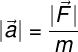
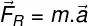

LEIS DE NEWTON
As leis de Newton são: Lei da Inércia, Princípio Fundamental da Dinâmica e Lei da Ação e Reação. Essas leis são usadas para determinar a dinâmica dos movimentos dos corpos.
Introdução às Leis de Newton
Um dos principais legados deixados por Isaac Newton foi a precisa explicação matemática para o movimento dos corpos. A Mecânica Newtoniana mostrou-se capaz de predizer a trajetória de asteroides e o surgimento das marés, tornando-se um dos marcos da Física por trazer equações matemáticas para a explicação de fenômenos naturais.
Essa é a mais célebre equação científica do século 20 e foi desenvolvida por Albert Einstein. Ela estabelece a equivalência quantitativa da transformação de matéria em energia ou vice-versa.
Juntas, as três leis de Newton são usadas para descrever a dinâmica dos corpos, isto é, as causas que podem alterar seu estado de movimento. Em termos simples, as leis de Newton tratam de situações em que os corpos permanecem ou não em equilíbrio. Quando um corpo está sujeito a inúmeras forças que se cancelam, dizemos que ele encontra-se em equilíbrio estático ou dinâmico, ou seja, perfeitamente parado ou se movendo com velocidade constante e em linha reta.
O agente responsável pela mudança no estado de movimento dos corpos é chamado de força, uma grandeza vetorial cuja unidade é o kg.m/s² e que foi batizada, posteriormente, como N (Newton). Quando um corpo está sujeito a uma resultante não nula (diferente de zero) de forças, ele adquire uma aceleração (variação de velocidade). Essa aceleração, por sua vez, é inversamente proporcional à sua massa, ou seja, quanto maior for a massa, menor será a aceleração adquirida pelo corpo. De acordo com as leis de Newton, a massa é uma medida da inércia do corpo, ou seja, da tendência que um corpo tem de permanecer em seu atual estado de equilíbrio estático ou dinâmico.
"1ª Lei de Newton"
A Primeira Lei de Newton é chamada de Lei da Inércia. Seu enunciado original encontra-se traduzido abaixo:
"“Todo corpo continua em seu estado de repouso ou de movimento uniforme em uma linha reta, a menos que seja forçado a mudar aquele estado por forças aplicadas sobre ele.”"
Essa lei diz que, ao menos que haja alguma força resultante não nula sobre um corpo, esse deverá manter-se em repouso ou se mover ao longo de uma linha reta com velocidade constante. A Lei de Inércia também explica o surgimento das forças inerciais, isto é, as forças que surgem quando os corpos estão sujeitos a alguma força capaz de produzir neles uma aceleração. Por exemplo: ao pisar no acelerador do carro, um motorista pode sentir-se comprimido em seu banco, como se houvesse uma força puxando-o para trás. Na verdade, o que ele sente é a expressão de sua inércia, ou seja, a tendência que seu corpo tem de permanecer parado ou em velocidade constante.
Além disso, quanto maior for a massa de um corpo, maior será sua inércia. Assim, alterar o estado de movimento de um corpo de massa grande requer a aplicação de uma força maior. Corpos de massa pequena têm seu estado de movimento alterado facilmente com a aplicação de forças menos intensas.
2ª Lei de Newton
A Segunda Lei de Newton, também conhecida como Lei da Superposição de Forças ou como Princípio Fundamental da Dinâmica, traduzida de sua forma original, é apresentada abaixo:
“A mudança de movimento é proporcional à força motora imprimida e é produzida na direção de linha reta na qual aquela força é aplicada.”
Essa lei informa que o módulo da aceleração produzida sobre um corpo é diretamente proporcional ao módulo da força aplicada sobre ele e inversamente proporcional à sua massa. Essa lei é apresentada na equação abaixo:

|a| – módulo da aceleração (m/s²)
|F| - módulo da força (N ou kg.m/s²)
m – massa do corpo (kg)
As forças são grandezas vetoriais, portanto, são escritas com uma seta apontada sempre para direita acima de seu símbolo. Essa seta não indica o módulo ou a direção da grandeza vetorial, indica somente que elas são vetoriais. De acordo com a Segunda Lei de Newton, a força resultante aplicada sobre um corpo produz nele uma aceleração na mesma direção e sentido da força resultante:

FR – Força resultante (N ou kg.m/s²)
m – massa do corpo (kg)
a – aceleração (m/s²)
3ª Lei de Newton
A Terceira Lei de Newton recebe o nome de Lei da Ação e Reação. Essa lei diz que todas as forças surgem aos pares: ao aplicarmos uma força sobre um corpo (ação), recebemos desse corpo a mesma força (reação), com mesmo módulo e na mesma direção, porém com sentido oposto. O enunciado original da Terceira Lei de Newton encontra-se traduzido abaixo:
“A toda ação há sempre uma reação oposta e de igual intensidade: as ações mútuas de dois corpos um sobre o outro são sempre iguais e dirigidas em sentidos opostos.”
Essa lei permite-nos entender que, para que surja uma força, é necessário que dois corpos interajam, produzindo forças de ação e reação. Além disso, é impossível que um par de ação e reação forme-se no mesmo corpo.
Outra informação contida no enunciado da Terceira Lei de Newton indica que os pares de ação e reação têm a mesma intensidade, mesma direção, porém sentidos opostos. Assim, se produzirmos uma força direcionada para baixo sobre um corpo, receberemos dele uma força de reação direcionada para cima. Por exemplo: se estivermos usando patins e empurrarmos um carrinho de supermercado lotado de compras, seremos empurrados para trás, em decorrência da fraca intensidade da força de atrito entre as rodas dos patins e o piso.
CALCULADORA
Cálculo do Módulo da Aceleração
Fórmula:
|F| =
m =
Cálculo da Aceleração
Fórmula:
ΔV =
ΔT =
Cálculo da Força Resultante
Fórmula:
m =
a =